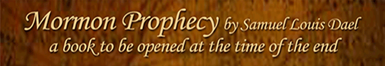

The Beast out of the Sea and the Beast out of the Earth
Beast OuT of The Sea
1 And I stood upon the sand of the sea, and saw a beast rise up out of the sea, having seven heads and ten horns, and upon his horns ten crowns, and upon his heads the name of blasphemy.
2 And the beast which I saw was like unto a leopard, and his feet were as the feet of a bear, and his mouth as the mouth of a lion: and the dragon gave him his power, and his seat, and great authority.
3 And I saw one of his heads as it were wounded to death; and his deadly wound was healed: and all the world wondered after the beast. (Revelation 13:1-3
Then Look back to Daniel.
7 After this I saw in the night visions, and behold a fourth beast, dreadful and terrible, and strong exceedingly; and it had great iron teeth: it devoured and brake in pieces, and stamped the residue with the feet of it: and it was diverse from all the beasts that were before it; and it had ten horns. (Daniel 7:7)
Daniel is referring to a fourth beast comparable to the fourth kingdom of iron or fourth Christian kingdom manifest in the Great Image, Four Beasts, and Four Kings. The previous beasts are indicated before.
4 The first was like a lion, and had eagle’s wings: I beheld till the wings thereof were plucked, and it was lifted up from the earth, and made stand upon the feet as a man, and a man’s heart was given to it.
5 And behold another beast, a second, like to a bear, and it raised up itself on one side, and it had three ribs in the mouth of it between the teeth of it: and they said thus unto it, Arise, devour much flesh.
6 After this I beheld, and lo another, like a leopard, which had upon the back of it four wings of a fowl; the beast had also four heads; and dominion was given to it.
Here we have the three preceding beasts. The Lion or Kingdom of Gold is the first Christian Church taken up from the earth and a man’s heart is given to the Church that remains. Before it was taken up it was the Kingdom of Heaven or the Order of Enoch after the Order of the Son of God. The next kingdom was like a bear or kingdom of silver that was higher on one side, which devoured more than another part of the kingdom. This second kingdom was the Gentile Church dominated by Rome. The Jewish Christian became a people preserved in the North and their identity hidden as they took on Christian names. The Church of Rome did devour many new members. The third kingdom of brass was like a leopard having variable stripes or churches, which is also manifested by the four wings and four heads or basic doctrines of the Reformation. Finally the fourth kingdom of iron as in iron teeth resides in the Mormon Church. If the beast comes out of the sea it means that it came out of the knowledge of the Lord or out of the prophecies and revelations of Joseph Smith. This fourth beast coming out of the sea had seven heads or strange doctrines made different from the knowledge of the Lord. Some of theses doctrines will govern the Church until the redemption of Zion.
12 Therefore, continue your journey and let your hearts rejoice; for behold, and lo, I am with you even unto the end.
13 And now I give unto you a word concerning Zion. Zion shall be redeemed, although she is chastened for a little season (D&C 100:12-13).
And the last revelation to Brigham Young:
18 Zion shall be redeemed in mine own due time (D&C 136:18).
This was from a revelation that sounded like last minute instructions before the desolations. It ended with “Amen and Amen.” From this time fourth the Church would suffer desolations of war that would spread over the whole earth as given in an earlier prophecy on war to Joseph Smith. The desolations come because the saints refused to live the Law of Consecration or Order of Enoch restored to Joseph Smith. This is why the Lord drove the woman (Rev. 12) into the wilderness. This beast out of the knowledge of the Lord rises up in the church. The seven heads are seven doctrines the become the gall the saints chooses to drink:
15 Therefore thus saith the Lord of hosts, the God of Israel; Behold, I will feed them, even this people, with wormwood, and give them water of gall to drink (Jeremiah 9:15).
The gall or seven heads began with tithing when it was changed to income in 1844. This was the abomination in the mist of the confirmation of the covenant prophesied by Daniel. The change has not been corrected in the Church. The doctrine still remains. The gall that followed began with a change in tithing and then followed with a distorted doctrine of plural wives. The Church literally thought that many wives was essential to bring spirits to the earth and people future worlds despite Malachi’s Prophecy in chapter two that one wife produces a Godly seed:
13 And this have ye done again, covering the altar of the Lord with tears, with weeping, and with crying out, insomuch that he regardeth not the offering any more, or receiveth it with good will at your hand.
14 Yet ye say, Wherefore? Because the Lord hath been witness between thee and the wife of thy youth, against whom thou hast dealt treacherously: yet is she thy companion, and the wife of thy covenant.
15 And did not he make one? Yet had he the residue of the spirit. And wherefore one? That he might seek a godly seed. Therefore take heed to your spirit, and let none deal treacherously against the wife of his youth.
Polygamy has fallen in the Church since Welford Woodruff.
Blood atonement came about the same time. This was also a misunderstanding of the principle of sacrifice or taking one’s life for atonement. It probably arose from misunderstanding the temple endowment ceremony. The connection between these endowments is often associated with Masonry. There are similarities, but the origin of Masonry comes over many generations from the Knights Templar, who according to some historical writers originated from Jewish Christians escaping Jerusalem before and perhaps after its destruction in 70 AD. Those early Templars had an oath of poverty and an oath of chastity—common with the Mormons oath to live the Law of Consecration and their oath of chastity. Common also is the covenant not to reveal these oaths or the signs associated. The Masons had this concept also in their heads that might even have caused them to justify themselves in any participation in the martyr of Joseph Smith. Masonry was common with leaders in those days and to assume Masons did not participate cannot be assured, for Joseph did reveal some of these similar signs to others and therefore must suffer death. This warning, also taught by Brigham Young, might have come from Masonry or the Lord directly. Because they could not understand the allegory of “not to reveal” many Mormons adopted Brigham Young’s teaching that were accelerated prior to the Mountain Meadow Massacre. “Reveal” comes from the word “re-veil” so one does not re-veil or change the ceremony by shrouding it with change or confusion. This destroys any change for the allegory to be understood. From the Mormons point of view many must die because some had killed their leaders back in Missouri, for which the wagon train came. This concept of blood atonement was the precursor of the Mountain Meadow Massacre and derived from a fabrication out of the knowledge of the Lord. To take one’s life is the allegory of accepting the punishment of Jesus Christ if we do not keep our covenants with him. Reaching the sure sign comes after sustaining the Order of Enoch or other great sacrifices, but this too is not certain if we shed innocent blood. The Mormon Leaders changed the endowment and omitted the punishment because of knowledge of it obtained by non-Mormons. The Church is guilty of re-veiling the ordnances because they did not understand.
Blood Atonement has fallen in the Church over time
Another doctrine also established by Brigham Young was called the Adam God Theory. According to Brigham Young Adam was Michael the Archangel, and that he was also the Ancient of Days. Young went on to conclude that Adam was, in fact, "our Father and our God, and the only God with whom we have to do." In this message, Mormonism's second president explained that Eve was only one of Adam's wives and that Jesus Christ "was not begotten by the Holy Ghost." Instead, Young said, He "was begotten in the flesh by the same character that was in the Garden of Eden, and who is our Father in Heaven." Adam is Michael the Ancient of Days, but after that, Brigham Young speculates to justify his view of sex and having many wives. If there is any truth in Adam being the only God in whom we have to deal, it would come from the idea that Adam’s greatest mission was to remain a person of spirit or the Holy Ghost until all have be judged. Christ would serve that role until Adam had died. It is this office that all of us deal with God. With that said, Brigham Young had no idea and again pulled his strange doctrines out of the knowledge of the Lord. The Church, from the beginning has down played this doctrine, but some fundamentalist still talk about it in various forms.
The Adam God Doctrine has been downplayed by the Church quickly after Brigham Young
The most difficult doctrine taught and practiced by Brigham Young has so much Knowledge of the Lord that is difficult to pinpoint the false direction the Church took. This false direction centers on a misunderstanding of the sealing of one up unto eternal life. Joseph Smith practiced this principle and gave us D&C 124:124,
124 First, I give unto you Hyrum Smith to be a patriarch unto you, to hold the sealing blessings of my church, even the Holy Spirit of promise, whereby ye are sealed up unto the day of redemption, that ye may not fall notwithstanding the hour of temptation that may come upon you.
What does this mean as we compare it with D&C 131:5
5 (May 17th, 1843.) The more sure word of prophecy means a man’s knowing that he is sealed up unto eternal life, by revelation and the spirit of prophecy, through the power of the Holy Priesthood.
And again with Section 76: 53 and 88:3
53 And who overcome by faith, and are sealed by the Holy Spirit of promise, which the Father sheds forth upon all those who are just and true.
And…
3 Wherefore, I now send upon you another Comforter, even upon you my friends, that it may abide in your hearts, even the Holy Spirit of promise; which other Comforter is the same that I promised unto my disciples, as is recorded in the testimony of John.
We get the following implications:
- Hyrum Smith held the power of the Holy Spirit of promise to seal up.
- Sure word of prophecy is when one knows they are sealed up.
- Those who overcome by faith the Father sheds the Holy Spirit of promise.
- The other or second comforter is the Holy Spirit of promise.
There are many references to the Holy Spirit of promise—all giving variations as to what the Holy Spirit of Promise is. Visions of Joseph Smith imply that keys are given. Tradition calls these keys authority and we are taught that Malachi brought back the authority of temple sealing. Then again we are taught traditionally that Elise brought back the temple marriage. Now everything gets confusing when we call keys as passing authority rather than the passing of knowledge as in the key of knowledge. “This, therefore, is the sealing and binding power, and, in one sense of the word, the keys of the kingdom, which consist in the key of knowledge.” This came from a letter written by Joseph Smith (D&C 128:14). Is Joseph implying that the keys of the kingdom is a binding power as in sealing one up to eternal life or a binding power as if the knowledge of recording a covenant that it may be recorded in heaven. Tradition has chosen the sealing of persons rather than the sealing or recording of their covenants. According to Joseph Smith in his instructions on baptism in behalf of the dead explains that to record is to seal. What the Mechizedek Priesthood seals is the covenants and not the person. The Holy Ghost is given to the individual as a promise if they keep the covenants recorded by the Priesthood, they will be saved; otherwise they will receive punishment according to their works. The origin of seal is to seal a document or covenant. The mind adapts to the binding of the envelope rather than the king’s seal on the document, accepting the contract. When one buys a home on contract this contract must be recorded and sealed by the county recorder. The purchase does not guarantee eternal possession. Fulfilling the contract is required. This differs from the Holy Spirit of promise or second comforter. The priesthood becomes the recorder, but Christ must still judge according to one’s works. The Holy Ghost fulfills his mission by giving the saint comfort in the mean time.
The Holy Spirit of Promise
Christ as judge said that He would send another comforter. This is the Holy Spirit of promise or the Lord himself. This Holy Spirit of promise more explicitly becomes the sure sigh having no punishment once we receive it, unless we shed innocent blood or deny the Holy Ghost. By returning to the four samples above, the Holy Spirit of promise does not reside in and individual or the Priesthood. It comes only by revelation from Jesus Christ. Anyone can receive revelation through the Holy Ghost, but only a prophet can receive revelation from Jesus Christ to seal someone up unto eternal life. The prophet does not hold the Holy Spirit of promise nor can he pass it on to another. He may pass the power of revelation in behalf of the saints, but not the Holy Spirit of promise because Jesus Christ retains this responsibility. Mormon tradition may not see it this way or even see the difference between the sign of the Holy Ghost and the sure sign of the Holy Spirit of promise. All covenants are of the first until Jesus Christ gives a revelation to seal one up. A Bishop and Stake president cannot make the decision for one to receive the Holy Spirit of promise. They can only determine worthiness to make a covenant so they do not bring destruction to themselves. Hyrum Smith was not given the Holy Spirit of promise, rather he retained the right to give blessings that if the individual fulfilled certain conditions. Hyrum could seal and record the conditions, but only Jesus Christ can seal the person up by revelation. Mormon tradition grossly lacks understanding of this difference even thought the endowments explain it.
Now what was Brigham Young’s problem? Tradition continues without understanding, but Brigham Young changed the concept of the Holy Spirit of promise by sealing men to men and many women to dead prophets. First, he continued sealing assuming the Holy Spirit of promise without the obligation to The Law of Consecration. The Church continues this not knowing that the sealing is only under the sign and not the sure sign. This poses no problem until we seal men to men with no covenant relationship to be judge. The same applies to sealing women to a dead prophet. If the Lord cannot promise by a sign of the Holy Ghost, He cannot judge by a sure sign of the Holy Spirit of promise. Sealing dead couples together works because judgment can be determined by the lives they had together according to their knowledge. The same applies to children to parents when there is a record of their living relationship. Sealing men to men and women to dead prophets has no earthy record to reference.
This improper sealing fell in the Church, as it was no longer practiced.
The last doctrine to fall in the church pertains to blacks and the priesthood. During the time of Harold B. Lee, the Quorum of Twelve decided to change the tradition. When Harold B. Lee found out he put his hand forth to change the minds of the twelve individually. Spencer W. Kimble was president of the twelve and when he became prophet, what he and the twelve had previously done became law in the Church. Brigham Young started the misunderstanding by interpreting the book of Abraham to apply to the modern church. He did this without revelation. The Church for years did not understand that when Christ gave the priesthood to the Gentiles, He gave it to all other than just Israel because for the most part the Jews will reject the Fullness of the Gospel or Order of Enoch given them in Jerusalem. Joseph Smith gave the priesthood to a black man and there are records of some receiving temple endowments. Bingham Young was incorrect.
Keeping the blacks from the Priesthood finely fell in the Church by unanimous vote of the Quorum of Twelve—another method of revelation.
This leaves one head of the seven to clarify. We need to advance to another revelation before an interpretation can be made. It comes from Rev. 17 in which John is given a review of the past. This also happed with Daniel with some of his visions. Keep in mind that the seven halftimes in Revelation would be talking about the seven halftimes after the abomination in Daniel. When you correct Daniel to be a prophecy of Christianity and not secular kingdoms, the interpretations thus far are fitting.
7 And the angel said unto me, Wherefore didst thou marvel? I will tell thee the mystery of the woman, and of the beast that carrieth her, which hath the seven heads and ten horns.
8 The beast that thou sawest was, and is not; and shall ascend out of the bottomless pit, and go into perdition: and they that dwell on the earth shall wonder, whose names were not written in the book of life from the foundation of the world, when they behold the beast that was, and is not, and yet is.
9 And here is the mind which hath wisdom. The seven heads are seven mountains, on which the woman sitteth.
10 And there are seven kings: five are fallen, and one is, and the other is not yet come; and when he cometh, he must continue a short space.
It is here that the angel explains that the woman (Church driven into the wilderness) rides the beast and that the seven heads are mountains. Tradition interprets this literally as if the angel is talking about physical mountains. Prophecy does this, but the interpretation is simply another allegory designed to still hide the message and prevent incorrect interpetations but give those who can see something to study further. As before the mountains are false doctrines to overcome. The angel also uses kings instead of heads or mountains. This also implies that we need to overcome the king’s control over us. The tradition of Rome sitting on seven physical mountains does not fit this scenario. The use of kings prevents this kind of interpretation. The use of kings to replace mountains keeps us from also thinking that the mountains are leaders of the Church. The allegory for a prophet and apostle is star and not mountain or head. Prophecy uses kings to express control and mountains to express something difficult to overcome. With this understanding, five of the original kings have fallen in the Church, one still remains (Incorrect Tithe) and one is yet to come from a specific time of the first beast having seven controls over the Church. The seventh was not a leader, but a doctrine of a prophet. Welford Woodruff was trying to control a tradition already in the church, which was to consider that all prophets receive revelation at all times. This was not the fault of Bingham Young; rather it was the fault of the saints themselves. This tradition existed during the time of Brigham Young, because the saints would not follow his every command unless they practiced idolatry towards him. So this tradition existed in the Church, but was not confirmed as a doctrine until Welford Woodruff.
The Lord will never permit me or any other man who stands as President of this Church to lead you astray. It is not in the programme. It is not in the mind of God. If I were to attempt that, the Lord would remove me out of my place, and so He will any other man who attempts to lead the children of men astray from the oracles of God and from their duty. (Sixty-first Semiannual General Conference of the Church, Monday, October 6, 1890, Salt Lake City, Utah. Reported in Deseret Evening News, October 11, 1890, p. 2.)
The above was designed to preserve the seventh king, mountain or head of the beast. It assumes that the Lord will remove a prophet if he teaches something wrong. The false doctrine could be used by the Lord as gall to test the saint’s ability to know the truth through the Holy Ghost and not idolatry. Pres. Woodruff was implying blind obedience and infallibility of a prophet as Catholic Rome establish the infallibility of the Pope. There are many Old Testament prophets that have said otherwise. Here are two:
Isaiah 28:7 ¶But they also have erred through wine, and through strong drink (doctrine) are out of the way; the priest and the prophet have erred through strong drink (doctrine), they are swallowed up of wine (doctrine), they are out of the way through strong drink (doctrine); they err in vision, they stumble in judgment.
Mica 3:5-7 ¶Thus saith the Lord concerning the prophets that make my people err, that bite with their teeth, and cry, Peace; and he that putteth not into their mouths, they even prepare war against him. Therefore night shall be unto you, that ye shall not have a vision; and it shall be dark unto you, that ye shall not divine; and the sun shall go down over the prophets, and the day shall be dark over them.
The italics (doctrine) was added to avoid the misconception that drinking literal wine causes the prophet to err. I have a personal experience of one Mormon prophet drinking wine at a temple party and another witnessing inebriated breathe in the temple. This in no way clouds their ability to lead as a leader. Prophets become inebriated with doctrine. Again the Lord uses allegory to cover the hidden message. In continuing Revelation 17:
11 And the beast that was, and is not, even he is the eighth, and is of the seven, and goeth into perdition.
If we accept the tradition of infallibility of a prophet as the seventh head, what is the eighth, which was of the seven? It is the same doctrine resurrected when the Church did away with the false doctrine of keeping blacks from the priesthood. Heber C. Kimble quoted Pres. Woodruff implied that prophets do not make mistakes. Some leaders taught that even if the prophet is wrong, the Lord would bless the obedient. This again preserved the tradition, but made it a full-fledged doctrine there after. The Iron teeth in Daniel’s iron kingdom predicted this time when the saints would be controlled even more. President Kimble in a speech contradicted Mica by saying the sun would not go down over the prophets. This probably comes from the promise to never take away the priesthood. The two are not related. Only when the priesthood fosters idolatry will problems arise. The priesthood will be essential for the redemption of Zion along with the Gift of the Holy Ghost that will inspire many to search for a republic of common consent where all have an equal opportunity to speak rather than raise our hands blindly to a prophet. To control by leadership and authority is not the same as each person coming to the knowledge of the truth by the Holy Ghost. The Mormon Church will never be able to correct the mountain of false tithing because the eighth king or infallibility of a prophet causes us to worship the first beast or incorrect tithing. This is why tithing has not yet fallen.
12 And the ten horns which thou sawest are ten kings, which have received no kingdom as yet; but receive power as kings one hour with the beast.
13 These have one mind, and shall give their power and strength unto the beast.
Who are the ten kings derived from the ten horns of the beast. If the number 10 is allegorical you have to come up with a term. If literal then ten individuals gave power to the Quorum of the Twelve to lead the Church after Joseph Smith’s martyr. This is partly true as long as idolatry is not promoted. Those remaining were only ten because one had died and the other did not support Brigham Young. Daniel 7 uses the number three for the same time and condition but from a different point of view:
8 I considered the horns, and, behold, there came up among them another little horn, before whom there were three of the first horns plucked up by the roots: and, behold, in this horn were eyes like the eyes of man, and a mouth speaking great things.
Daniel is describing the fourth kingdom of Christianity that had “great iron teeth” and its ten horns. One little horn (Brigham Young) came up from the ten remaining of the twelve. Before this, the Lord plucked up three of the first horns—Joseph Smith, Hyrum Smith and Samuel Smith, who died a few months’ later. Because this little horn is Brigham Young agrees with Daniel 8, which says a little horn came up from the four horns of the reformation. This is also Bingham Young. The numbering is literal and the ten horns gave power to the beast that came up out or the sea.
Beast OuT of The Earth
11 And I beheld another beast coming up out of the earth; and he had two horns like a lamb, and he spake as a dragon.
In Revelation 13, the earth represents the Kingdom of God on earth. This means the doctrine came out of the church and not a misunderstanding of the Knowledge of the Lord or sea of knowledge. The two horns are like a lamb suggesting good, but when they speak they speak like a dragon. The two horns could easily be Welford Woodruff and Heber C. Kimble, but since this is still ongoing in the Church the horns may be misunderstood. It is natural to suppose the authors of the infallibility of prophets be the two horns. As a king the doctrine was the seventh and also the eight. Pres. Kimble was wise to change the doctrine of keeping the blacks from the priesthood, but he thought himself one with a mission, and to justify his direction he used the same argument as Pres. Woodruff. Thus the doctrine of infallibility of the prophets was, is not, and yet is. It “was” with Pres. Woodruff, and then “was not” mentioned for some time or forgotten, and “yet is” resurrected in the Church and has become the foundation of every conference. There could be other ways of expressing this paradox. You could apply it to all of Christianity as it is the nature to control by infallibility, then a period of time come to not accept it, and finely to fall prey to it again.
12 And he exerciseth all the power of the first beast before him, and causeth the earth and them which dwell therein to worship the first beast, whose deadly wound was healed.
Infallibility of the prophets does cause the saints to continue worshiping the first beast or mountain, which is the remaining head or false interpretation of tithing. It was wounded and healed, but how was it healed? The answer is in verse 17.
13 And he doeth great wonders, so that he maketh fire come down from heaven on the earth in the sight of men,
14 And deceiveth them that dwell on the earth by the means of
those miracles which he had power to do in the sight of the beast; saying to them that dwell on the earth, that they should make an image to the beast, which had the wound by a sword, and did live.
The fire that came down from heaven is the guilt the saints of the earth feel when they do not follow the prophets blindly. This beast of infallibility thus causes the saints to worship the first beast remaining, which is the incorrect interpretation of the tithe, which was also the first false doctrine of Brigham Young. It is like making an image of the first beast and to give it more life.
15 And he had power to give life unto the image of the beast, that the image of the beast should both speak, and cause that as many as would not worship the image of the beast should be killed.
To be killed is allegory for being shunned or rejected for not practicing the idolatry of a prophet and the doctrine of tithing. It is the same as one would grind the faces of the poor in the pews of the Church who do not pay a tithe of income or the idolatry that causes one to accept it.
16 And the ten horns which thou sawest upon the beast, these shall hate the whore, and shall make her desolate and naked, and shall eat her flesh, and burn her with fire.
17 For God hath put in their hearts to fulfil his will, and to agree, and give their kingdom unto the beast, until the words of God shall be fulfilled.
The interpretation refers to a general conclusion of the first beast that basically hates the whore or church that accepts this doctrine. This incorrect doctrine of tithe is what made the church desolate and naked without the man-child or Order of Enoch. The doctrine eats the flesh of the saints, as one would grind the faces of the poor when they proselyte the doctrine of tithe by income, which came out of the reformation, which came from the Mosaic Law. God seemed to put it into the hearts of the 10 horns to fulfill his will and his prophecy because He knew the saints would not live the Order of Enoch. In this respect it was healed and was found acceptable by the Lord, as Israel also could not live the Order of Enoch. With Israel the higher priesthood was withheld. With the Mormons it would remain unto the redemption of Zion, but keep in mind that which was written about the priesthood and the power to record and not seal up. Christ cannot seal up until we live the Order of Enoch.
The mark of the beast is what is in the mind of the saints who cannot see. To carry it in the hand is to carry things written only by the Church that does not counter tithing or infallibility. To buy and sell is to receive and teach only that which the Church can control. The forehead and the hand refer to what is in the mind and what the hand carries as written by authority. To teach the truth is not to worship the mark of the beast. If you speculate on other more literal measures you will probably miss the mark.